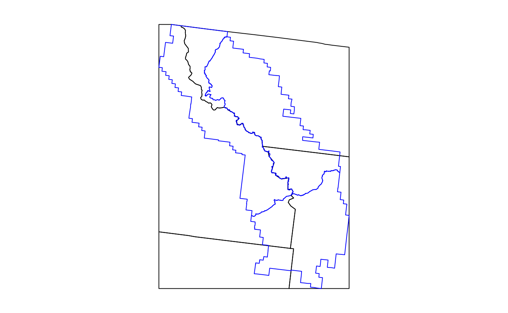

FIESTA_tutorial_SA.RmdFIESTA’s Small Area (SA) module was set up as a platform
to integrate with current Small Area Estimators available on CRAN
including the JoSAE (Breidenbach 2015), sae
(Molina and Marhuenda 2015), and hbsae (Boonstra 2012)
packages that use unit-level and area-level models such as the Empirical
Best Linear Unbiased Prediction (EBLUP) estimation strategy and the
hierarchical Bayesian estimation strategy. Rao (2003) discusses the
benefits of the EBLUP for balancing potential bias of synthetic
estimators against the instability of a direct estimator. White et al
(2021) discusses the benefits of Small Area Estimation in a hierarchical
Bayesian context, especially for forestry data. The module includes
functional steps for checking, compiling, and formatting FIA plot data
and auxiliary spatial information for input to R packages, such as
JoSAE (Breidenbach 2015), sae (Molina and
Marhuenda 2015), or hbsae (Boonstra 2012) and translates
integrated package output to FIESTA output format.
Functions in FIESTA used for fitting Small Area
Estimators include the modSAarea function for area
estimates and modSAtree for tree estimates. The
modSApop function is used to get population data needed for
small area estimation. Below is a description and table of contents for
the sections related to these functions:
| FUNCTION | DESCRIPTION |
|---|---|
| modSApop | Creates population data for small area estimation. |
| modSAarea | Produces area level estimates through small area estimation. |
| modSAtree | Produces tree level estimates through small area estimation. |
The main objective of this tutorial is to demonstrate how to use
FIESTA for generating estimates using estimators from the
JoSAE, sae, and hbsae R packages.
The following examples are for generating estimates and estimated
variances using standard FIA Evaluation data from FIA’s National
database, with custom Estimation unit and Stratification information.
The examples use data from three inventory years of field measurements
in the state of Wyoming, from FIADB_1.7.2.00, last updated June 20,
2018, downloaded on June 25, 2018 and stored as internal data objects in
FIESTA.
| Data Frame | Description |
|---|---|
| WYplt | WY plot-level data |
| WYcond | WY condition-level data |
| WYtree | WY tree-level data |
| External data | Description |
|---|---|
| WYbighorn_adminbnd.shp | Polygon shapefile of WY Bighorn National Forest Administrative boundary* |
| WYbighorn_districtbnd.shp | Polygon shapefile of WY Bighorn National Forest District boundaries** |
| WYbighorn_forest_nonforest_250m.tif | GeoTIFF raster of predicted forest/nonforest (1/0) for stratification*** |
| WYbighorn_dem_250m.img | Erdas Imagine raster of elevation change, in meters**** |
*USDA Forest Service, Automated Lands Program (ALP). 2018. S_USA.AdministrativeForest (). Description: An area encompassing all the National Forest System lands administered by an administrative unit. The area encompasses private lands, other governmental agency lands, and may contain National Forest System lands within the proclaimed boundaries of another administrative unit. All National Forest System lands fall within one and only one Administrative Forest Area.
**USDA Forest Service, Automated Lands Program (ALP). 2018. S_USA.RangerDistrict (http://data.fs.usda.gov/geodata/edw). Description: A depiction of the boundary that encompasses a Ranger District.
***Based on MODIS-based classified map resampled from 250m to 500m resolution and reclassified from 3 to 2 classes: 1:forest; 2:nonforest. Projected in Albers Conical Equal Area, Datum NAD27 (Ruefenacht et al. 2008). Clipped to extent of WYbighorn_adminbnd.shp.
****USGS National Elevation Dataset (NED), resampled from 30m resolution to 250m. Projected in Albers Conical Equal Area, Datum NAD27 (U.S. Geological Survey 2017). Clipped to boundary of WYbighorn_adminbnd.shp.
First, you’ll need to load the FIESTA library:
library(FIESTA)Next, you’ll need to set up an “outfolder”. This is just a file path
to a folder where you’d like FIESTA to send your data
output. For our purposes in this vignette, we have saved our outfolder
file path as the outfolder object in a temporary directory.
We also set a few default options preferred for this vignette.
outfolder <- tempdir()Now that we’ve loaded FIESTA and setup our outfolder, we
can retrieve the data needed to run the examples. First, we point to
some external data and predictor layers stored in FIESTA
and derive new predictor layers using the terra
package.
# File names for external spatial data
WYbhfn <- system.file("extdata", "sp_data/WYbighorn_adminbnd.shp", package="FIESTA")
WYbhdistfn <- system.file("extdata", "sp_data/WYbighorn_districtbnd.shp", package="FIESTA")
WYbhdist.att <- "DISTRICTNA"
fornffn <- system.file("extdata", "sp_data/WYbighorn_forest_nonforest_250m.tif", package="FIESTA")
demfn <- system.file("extdata", "sp_data/WYbighorn_dem_250m.img", package="FIESTA")
# Derive new predictor layers from dem
library(terra)
dem <- rast(demfn)
slpfn <- paste0(outfolder, "/WYbh_slp.img")
slp <- terra::terrain(dem,
v = "slope",
unit = "degrees",
filename = slpfn,
overwrite = TRUE)
aspfn <- paste0(outfolder, "/WYbh_asp.img")
asp <- terra::terrain(dem,
v = "aspect",
unit = "degrees",
filename = aspfn,
overwrite = TRUE)Next, we set up our small area domains with
FIESTA::spGetSAdoms. For more information on how to use
this function, please see the sp vignette included with
FIESTA (link).
smallbnd <- WYbhdistfn
smallbnd.domain <- "DISTRICTNA"Next, we can get our FIA plot data and set up our auxiliary data. We
can get our FIA plot data with the spGetPlots function from
FIESTA, which accesses data through FIA’s
DataMart. Here, data are downloaded for all states intersecting
boundary, then subset to boundary.
SApltdat <- spGetPlots(bnd = WYbhdistfn,
xy_datsource = "obj",
xy = WYplt,
xy_opts = list(xy.uniqueid = "CN", xvar = "LON_PUBLIC",
yvar = "LAT_PUBLIC", xy.crs = 4269),
datsource = "obj",
istree = TRUE,
isseed = TRUE,
dbTabs = list(plot_layer = WYplt, cond_layer = WYcond,
tree_layer = WYtree, seed_layer = WYseed),
eval = "custom",
eval_opts = list(invyrs = 2011:2013),
showsteps = TRUE,
returnxy = TRUE,
savedata_opts = savedata_options(outfolder = outfolder))
str(SApltdat, max.level = 1)## List of 11
## $ tabs :List of 4
## $ tabIDs :List of 4
## $ spxy :Classes 'sf' and 'data.frame': 56 obs. of 11 variables:
## ..- attr(*, "sf_column")= chr "geometry"
## ..- attr(*, "agr")= Factor w/ 3 levels "constant","aggregate",..: NA NA NA NA NA NA NA NA NA NA
## .. ..- attr(*, "names")= chr [1:10] "PLT_CN" "INVYR" "STATECD" "UNITCD" ...
## $ pltids :'data.frame': 56 obs. of 8 variables:
## $ bnd :Classes 'sf' and 'data.frame': 3 obs. of 5 variables:
## ..- attr(*, "sf_column")= chr "geometry"
## ..- attr(*, "agr")= Factor w/ 3 levels "constant","aggregate",..: NA NA NA NA
## .. ..- attr(*, "names")= chr [1:4] "REGION" "FORESTNUMB" "DISTRICTNU" "DISTRICTNA"
## $ puniqueid : chr "CN"
## $ xy.uniqueid: chr "PLT_CN"
## $ pjoinid : chr "CN"
## $ states : chr "Wyoming"
## $ invyrs : int [1:3] 2011 2012 2013
## $ args :List of 13Finally, we must generate the dataset with predictors for small area
estimation. We can do this with the spGetAuxiliary function
from FIESTA. Again, see the sp vignette for
further information on this function.
rastlst.cont <- c(demfn, slpfn, aspfn)
rastlst.cont.name <- c("dem", "slp", "asp")
rastlst.cat <- fornffn
rastlst.cat.name <- "fornf"
unit_layer <- WYbhdistfn
unitvar <- "DISTRICTNA"
auxdat <- spGetAuxiliary(
xyplt = SApltdat$spxy,
uniqueid = "PLT_CN",
unit_layer = unit_layer,
unitvar = "DISTRICTNA",
rastlst.cont = rastlst.cont,
rastlst.cont.name = rastlst.cont.name,
rastlst.cont.stat = "mean",
rastlst.cont.NODATA = 0,
rastlst.cat = rastlst.cat,
rastlst.cat.name = rastlst.cat.name,
asptransform = TRUE,
rast.asp = aspfn,
keepNA = FALSE,
showext = FALSE,
savedata = FALSE
)
names(auxdat)
str(auxdat, max.level = 1)## List of 12
## $ unitvar : chr "DISTRICTNA"
## $ pltassgn :'data.frame': 56 obs. of 17 variables:
## $ pltassgnid : chr "PLT_CN"
## $ unitarea :'data.frame': 3 obs. of 2 variables:
## $ areavar : chr "ACRES_GIS"
## $ unitzonal :'data.frame': 3 obs. of 8 variables:
## $ inputdf :Classes 'data.table' and 'data.frame': 5 obs. of 7 variables:
## ..- attr(*, ".internal.selfref")=<externalptr>
## $ prednames : chr [1:5] "dem" "slp" "asp_cos" "asp_sin" ...
## $ zonalnames : chr [1:7] "dem" "slp" "asp_cos" "asp_sin" ...
## $ predfac : chr "fornf"
## $ npixelvar : chr "npixels"
## $ predfac.levels:List of 1modSApop
modMApop
We can create our population data for model-assisted estimation. To
do so, we use the modSApop function in FIESTA.
We must assign our plot data with the pltdat argument, the
auxiliary dataset with the auxdat argument, and set
information for our small areas with the smallbnd and
smallbnd.domain arguments. The spGetPlots and
spGetAuxiliary functions have done much of the hard work
for us so far, so we can just run a simple call to
modSApop:
SApopdat <- modSApop(pltdat = SApltdat,
auxdat = auxdat,
smallbnd = WYbhdistfn,
smallbnd.domain = smallbnd.domain)Note that the modSApop function returns a list with lots
of information and data for us to use. For a quick look at what this
list includes we can use the str function:
str(SApopdat, max.level = 1)## List of 25
## $ module : chr "SA"
## $ smallbnd :Classes 'sf' and 'data.frame': 3 obs. of 5 variables:
## ..- attr(*, "sf_column")= chr "geometry"
## ..- attr(*, "agr")= Factor w/ 3 levels "constant","aggregate",..: NA NA NA NA
## .. ..- attr(*, "names")= chr [1:4] "REGION" "FORESTNUMB" "DISTRICTNU" "DISTRICTNA"
## $ smallbnd.domain: chr "DISTRICTNA"
## $ condx :Classes 'data.table' and 'data.frame': 66 obs. of 17 variables:
## ..- attr(*, "sorted")= chr [1:2] "PLT_CN" "CONDID"
## ..- attr(*, ".internal.selfref")=<externalptr>
## $ pltcondx :Classes 'data.table' and 'data.frame': 66 obs. of 29 variables:
## ..- attr(*, ".internal.selfref")=<externalptr>
## ..- attr(*, "sorted")= chr [1:2] "PLT_CN" "CONDID"
## $ cuniqueid : chr "PLT_CN"
## $ condid : chr "CONDID"
## $ ACI.filter : chr "COND_STATUS_CD == 1"
## $ dunitarea :Classes 'data.table' and 'data.frame': 3 obs. of 2 variables:
## ..- attr(*, ".internal.selfref")=<externalptr>
## ..- attr(*, "sorted")= chr "DOMAIN"
## $ areavar : chr "ACRES_GIS"
## $ areaunits : chr "acres"
## $ dunitvar : chr "DOMAIN"
## $ dunitlut :Classes 'data.table' and 'data.frame': 3 obs. of 8 variables:
## ..- attr(*, ".internal.selfref")=<externalptr>
## ..- attr(*, "sorted")= chr "DOMAIN"
## $ plotsampcnt :'data.frame': 2 obs. of 3 variables:
## $ condsampcnt :'data.frame': 4 obs. of 3 variables:
## $ states : chr "Wyoming"
## $ invyrs :List of 1
## $ estvar.area : chr "CONDPROP_ADJ"
## $ adj : chr "plot"
## $ treex :'data.frame': 1691 obs. of 21 variables:
## $ tuniqueid : chr "PLT_CN"
## $ adjtree : logi FALSE
## $ seedx :'data.frame': 102 obs. of 11 variables:
## $ prednames : chr [1:5] "dem" "slp" "asp_cos" "asp_sin" ...
## $ predfac : chr "fornf"Now that we’ve created our population dataset, we can move on to estimation.
modSAarea
First, we can set up our predictors as a vector:
all_preds <- c("slp", "dem", "asp_cos", "asp_sin", "fornf")Next, we fit the unit-level EBLUP with the JoSAE R
package.
area1 <- modSAarea(
SApopdatlst = SApopdat, # pop - population calculations for WY, post-stratification
prednames = all_preds, # est - charater vector of predictors to be used in the model
SApackage = "JoSAE", # est - character string of the R package to do the estimation
SAmethod = "unit" # est - method of small area estimation. Either "unit" or "area"
)The modSAarea function outputs a list, and we can see
our estimates and estimation method.
str(area1, max.level = 1)## List of 2
## $ est:Classes 'data.table' and 'data.frame': 3 obs. of 3 variables:
## ..- attr(*, ".internal.selfref")=<externalptr>
## ..- attr(*, "sorted")= chr "DOMAIN"
## $ raw:List of 12
area1$est## DOMAIN Estimate Percent Sampling Error
## 1: Medicine Wheel Ranger District 225586.2 16.90
## 2: Powder River Ranger District 152976.2 26.17
## 3: Tongue Ranger District 286660.8 12.99
area1$raw$SAmethod## [1] "unit"We can also look further into the raw list below:
str(area1$raw, max.level = 1)## List of 12
## $ dunit_totest :'data.frame': 3 obs. of 18 variables:
## $ domdat :'data.frame': 66 obs. of 21 variables:
## $ module : chr "SA"
## $ esttype : chr "AREA"
## $ SApackage : chr "JoSAE"
## $ SAmethod : chr "unit"
## $ estnm : chr "est"
## $ predselect.unit:'data.frame': 1 obs. of 8 variables:
## $ SAobjlst :List of 1
## $ estvar : chr "AREA_ADJ"
## $ areaunits : chr "acres"
## $ estunits : chr "acres"In this example, we fit an area level EBLUP with JoSAE,
while only using slp as a predictor. We use only one predictor in the
area level model because at the area level, we only have three rows in
our dataset. Since we also have a random effect term, the model we fit
can have a maximum of one predictor without being exactly singular.
area2 <- modSAarea(
SApopdatlst = SApopdat, # pop - population calculations for WY, post-stratification
prednames = "slp", # est - charater vector of predictors to be used in the model
SApackage = "JoSAE", # est - character string of the R package to do the estimation
SAmethod = "area" # est - method of small area estimation. Either "unit" or "area"
)We again can see our estimates. Notably, we have slightly larger percent sampling errors to the unit-level model fit in Example 2. This is likely due to only being able to incorporate one predictor’s worth of information to the model.
area2$est## DOMAIN Estimate Percent Sampling Error
## 1: Medicine Wheel Ranger District 246497.2 19.80
## 2: Powder River Ranger District 141310.6 29.94
## 3: Tongue Ranger District 295968.8 14.01Since FIESTA will attempt fit all models when running
modSAarea, we can look at all the different modeling
approaches and their estimates with the multest object.
area2$multest## NULLNotably, the hbsae models returned NAs with this model,
likely due to computational issues with the integral they compute. Not
to worry, though, we will fit models with hbsae in the next
example.
FIESTA also supports the use of hierarchical Bayesian
(HB) models through the hbsae package as an alternative to
EBLUPs. These models use the same model specification as the EBLUP,
however they fit the model using a hierarchical Bayesian framework, and
get parameter estimates through numerical integration. Luckily, we do
not have to take an integral ourselves to fit these models, we can just
change the SApackage argument.
area3 <- modSAarea(
SApopdatlst = SApopdat, # pop - population calculations for WY, post-stratification
prednames = all_preds, # est - character vector of predictors to be used in the model
SApackage = "hbsae", # est - character string of the R package to do the estimation
SAmethod = "unit" # est - method of small area estimation. Either "unit" or "area"
)## REML estimate of variance ratio: 0.08628
## numerical integration of f(x): 26.21 with absolute error < 8.7e-06
## numerical integration of x*f(x): 17.01 with absolute error < 9e-06
## posterior mean for variance ratio: 0.6489We can again check our estimates, small area method, and small area package.
area3$est## DOMAIN Estimate Percent Sampling Error
## 1: Medicine Wheel Ranger District 227669.4 16.08
## 2: Powder River Ranger District 150163.3 23.32
## 3: Tongue Ranger District 287934.7 12.75
area3$raw$SAmethod## [1] "unit"
area3$raw$SApackage## [1] "hbsae"Notably, we can also set priors on the ratio of between and within
area variation with hbsae. By default, FIESTA
uses a weakly informative half-Cauchy prior on this parameter as
suggested by White et al (2021), but in this example we will fit the
same model as before, but with a flat prior.
area4 <- modSAarea(
SApopdatlst = SApopdat, # pop - population calculations for WY, post-stratification
prednames = all_preds, # est - charater vector of predictors to be used in the model
SApackage = "hbsae", # est - character string of the R package to do the estimation
SAmethod = "unit", # est - method of small area estimation. Either "unit" or "area"
prior = function(x) 1 # est - prior on ratio of between and within area variation
)## REML estimate of variance ratio: 0.08628
## numerical integration of f(x):Let’s check our results compared to Example 3 (same model with half-Cauchy prior)
area3$est## DOMAIN Estimate Percent Sampling Error
## 1: Medicine Wheel Ranger District 227669.4 16.08
## 2: Powder River Ranger District 150163.3 23.32
## 3: Tongue Ranger District 287934.7 12.75
area4$est## DOMAIN Estimate Percent Sampling Error
## 1: Medicine Wheel Ranger District NA NA
## 2: Powder River Ranger District NA NA
## 3: Tongue Ranger District NA NADue to rounding we do in FIESTA, we see the same result.
However, the estimates are slightly different. We can see this with the
model objects supplied in the output list from FIESTA:
JoSAE unit level EBLUP
FIESTA supports model variable selection via the elastic
net. To use model selection, we set the modelselect
argument to TRUE.
area5 <- modSAarea(
SApopdatlst = SApopdat, # pop - population calculations for WY, post-stratification
prednames = all_preds, # est - charater vector of predictors to be used in the model
SApackage = "JoSAE", # est - character string of the R package to do the estimation
SAmethod = "unit", # est - method of small area estimation. Either "unit" or "area"
modelselect = TRUE # est - elastic net variable selection
)We can now look at estimates with our subset of selected predictors and the predictors that were selected.
area5$est## DOMAIN Estimate Percent Sampling Error
## 1: Medicine Wheel Ranger District 225586.2 16.90
## 2: Powder River Ranger District 152976.2 26.17
## 3: Tongue Ranger District 286660.8 12.99
area5$raw$predselect.unit## LARGEBND LARGEBND TOTAL slp dem asp_cos asp_sin
## 1 SApopdat 1 1 0.008403849 -0.0001203369 0.02266181 -0.02543337
## fornf2
## 1 -0.3826619modSAtree
We will set our estimate variable and filter now. We set
estvar to "VOLCFNET" for net cubic foot
volume, and filter with estvar.filter set to
"STATUSCD == 1" so we only consider live trees in our
estimation.
estvar <- "VOLCFNET"
live_trees <- "STATUSCD == 1"Now, we can look at the total net cubic-foot volume of live trees,
filtered for live trees that are at least 5 inches in diameter. We use
the estvar and live_trees objects defined
above to set our response variable and filter, and then compute the
estimates.
tree1 <- modSAtree(
SApopdatlst = SApopdat, # pop - population calculations for WY, post-stratification
prednames = all_preds, # est - character vector of predictors to be used in the model
SApackage = "JoSAE", # est - character string of the R package to do the estimation
SAmethod = "unit", # est - method of small area estimation. Either "unit" or "area"
landarea = "FOREST", # est - forest land filter
estvar = estvar, # est - net cubic-foot volume
estvar.filter = live_trees # est - live trees only
)With both modSAtree and modSAarea,
FIESTA will return your requested estimates specified with
the SApackage and SAmethod arguments in the
est item, but will return all possible estimates in the
multest item. We can see these estimates below:
tree1$est## DOMAIN Estimate Percent Sampling Error
## 1: Medicine Wheel Ranger District 410467112 25.51
## 2: Powder River Ranger District 370723088 38.18
## 3: Tongue Ranger District 519145288 24.65
tree1$multest## NULLNotably, the area level models are NA in for this model, as there were more predictors than degrees of freedom in the model at the area level.
We can bring the modelselect parameter into play with
modSAtree as well as modSAarea. In the below
code, we set modelselect = TRUE to use the elastic net
variable selection before fitting the model.
tree2 <- modSAtree(
SApopdatlst = SApopdat, # pop - population calculations for WY, post-stratification
prednames = all_preds, # est - charater vector of predictors to be used in the model
SApackage = "JoSAE", # est - character string of the R package to do the estimation
SAmethod = "unit", # est - method of small area estimation. Either "unit" or "area"
landarea = "FOREST", # est - forest land filter
estvar = estvar, # est - net cubic-foot volume
estvar.filter = live_trees, # est - live trees only
modelselect = TRUE
)We now can look at the selected predictors and estimates.
tree2$raw$predselect.unit## LARGEBND LARGEBND TOTAL slp dem asp_cos asp_sin fornf2
## 1 SApopdat 1 1 -62.02585 0.6147319 53.42961 -507.6081 -1251.494
tree2$est## DOMAIN Estimate Percent Sampling Error
## 1: Medicine Wheel Ranger District 410467112 25.51
## 2: Powder River Ranger District 370723088 38.18
## 3: Tongue Ranger District 519145288 24.65JoSAE
We can also use different response variables to estimate, and in this
example we chose basal area. We also returned titles by using
returntitle = TRUE.
tree3 <- modSAtree(
SApopdatlst = SApopdat, # pop - population calculations for WY, post-stratification
prednames = all_preds, # est - charater vector of predictors to be used in the model
SApackage = "JoSAE", # est - character string of the R package to do the estimation
SAmethod = "unit", # est - method of small area estimation. Either "unit" or "area"
landarea = "FOREST", # est - forest land filter
estvar = "BA", # est - net cubic-foot volume
estvar.filter = live_trees, # est - live trees only
returntitle = TRUE
)Now we can take a look at our estimates:
tree3$est## DOMAIN Estimate Percent Sampling Error
## 1: Medicine Wheel Ranger District 21964071 22.24
## 2: Powder River Ranger District 18982240 32.81
## 3: Tongue Ranger District 29944472 19.43and see our title list since we set returntitle to
TRUE.
tree3$titlelst## $title.estpse
## [1] "Basal area of live trees (at least 1 in dia), in square feet, and percent sampling error on forest land live DOMAIN"
##
## $title.yvar
## [1] "Basal area, in square feet"
##
## $title.estvar
## [1] "Basal area of live trees (at least 1 in dia)"
##
## $title.unitvar
## [1] "DOMAIN"
##
## $title.ref
## [1] "Wyoming, 2011-2013"
##
## $outfn.estpse
## [1] "tree_BA_live_forestland"
##
## $outfn.rawdat
## [1] "tree_BA_live_forestland_rawdata"
##
## $title.tot
## [1] "Basal area of live trees (at least 1 in dia), in square feet, on forest land live; Wyoming, 2011-2013"
##
## $title.unitsn
## [1] "square feet"sae
Now, we can of course fit a different model to estimate basal area.
In this case, we choose to use dem to predict basal area with an
area-level EBLUP from the sae package.
tree4 <- modSAtree(
SApopdatlst = SApopdat, # pop - population calculations for WY, post-stratification
prednames = "dem", # est - charater vector of predictors to be used in the model
SApackage = "sae", # est - character string of the R package to do the estimation
SAmethod = "area", # est - method of small area estimation. Either "unit" or "area"
landarea = "FOREST", # est - forest land filter
estvar = "BA", # est - net cubic-foot volume
estvar.filter = live_trees, # est - live trees only
returntitle = TRUE
)Now we can take a look at our estimates.
tree4$est## DOMAIN Estimate Percent Sampling Error
## 1: Medicine Wheel Ranger District 22024177 32.79
## 2: Powder River Ranger District 17538106 41.99
## 3: Tongue Ranger District 35374513 27.57One may want to easily save FIESTA output to your
computer, rather than just having it live in the R environment.
FIESTA makes this easy with the use of the
savedata and savedata_opts arguments. If
savedata = TRUE, by default the output will be saved to
your working directory, but we can set an outfolder in
savedata_opts to choose where the data should be saved.
There are many other savedata_opts, and these can be seen
by looking at the help file for the savedata_options
function (use help(savedata_options) with
FIESTA loaded in your R environment).
tree5 <- modSAtree(
SApopdatlst = SApopdat, # pop - population calculations for WY, post-stratification
prednames = all_preds, # est - charater vector of predictors to be used in the model
SApackage = "JoSAE", # est - character string of the R package to do the estimation
SAmethod = "unit", # est - method of small area estimation. Either "unit" or "area"
landarea = "FOREST", # est - forest land filter
estvar = "BA", # est - net cubic-foot volume
estvar.filter = live_trees, # est - live trees only
savedata = TRUE,
savedata_opts = savedata_options(
outfolder = outfolder
)
)We can also of course use a different model to predict basal area,
and in this case we use a HB unit level model from hbsae.
We also save to an outfolder again, this time giving a file name prefix
with the outfn.pre arguement.
tree6 <- modSAtree(
SApopdatlst = SApopdat, # pop - population calculations for WY, post-stratification
prednames = all_preds, # est - charater vector of predictors to be used in the model
SApackage = "hbsae", # est - character string of the R package to do the estimation
SAmethod = "unit", # est - method of small area estimation. Either "unit" or "area"
landarea = "FOREST", # est - forest land filter
estvar = "BA", # est - net cubic-foot volume
estvar.filter = live_trees, # est - live trees only
savedata = TRUE,
savedata_opts = savedata_options(
outfolder = outfolder,
outfn.pre = "HB_unit"
)
)## REML estimate of variance ratio: 0.0346
## numerical integration of f(x): 22.61 with absolute error < 9e-06
## numerical integration of x*f(x): 10.96 with absolute error < 5e-06
## posterior mean for variance ratio: 0.4847We can see the files in the outfolder here:
list.files(outfolder, pattern = "HB")## character(0)And the estimates here:
tree6$est## DOMAIN Estimate Percent Sampling Error
## 1: Medicine Wheel Ranger District 22552929 22.11
## 2: Powder River Ranger District 17653030 27.29
## 3: Tongue Ranger District 30804151 17.04Breidenbach J. 2018. JoSAE: Unit-Level and Area-Level Small Area Estimation.
Molina I, Marhuenda Y. 2015. sae: An R Package for Small Area Estimation. The R Journal, 7(1), 81–98. https://journal.r-project.org/archive/2015/RJ-2015-007/RJ-2015-007.pdf.
Rao, J.N.K. 2003. Small Area Estimation. Wiley, Hoboken, New Jersey.